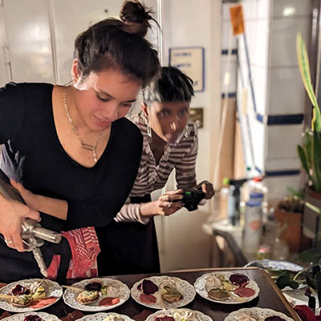

PANDAN: Thai- Sri Lankan pop-up restaurant
by Asli Hatipoglu & Tehani Amarasuriya
After working several years at art events, the artists and chefs Asli Hatipoglu and Tehani Amarasuriya have joined their tastebuds to bring a collaborative menu from their roots: thai- sri lankan dining experience with sharing plates.
[see menu below <3 ]
Tuesday, October, 14th, 2025
2 time slots: 18:00h-19:45h & 20:00h-21:45h
Hectolitre, 3rd floor, Rue de l'Hectolitre 3, Brussels
Accessibility: For accessibility inquiries, please contact us via direct message to arrange support.
Reserve a table using link and bring your family, friends & lovers
https://forms.gle/8fUjHzA2Q1TF2Beq8
Full menu price: 36 Euros (excluding drinks)
A selection of homebrewed fermented drinks will be available on location (cash only)
Participating Artists
Asli Hatipoglu [she/her]
Aslı Hatipoğlu (TH/TR) is an interdisciplinary artist whose social practice focuses on curating participatory dinners and installations that shed light on how culinary history and agricultural politics are changing our relationship to food. From working with micro-scale bacteria and yeasts responsible for fermentation to insects such as the domesticated silkworm, Asli critically investigates ways of relating to our environment and ourselves. Currently she has been working with the shifting narrative of an artist and a tour-guide, merging fiction and reality with story-telling in performative acts as a way to critically question today’s systems of production as a marketable tourist destination.
Asli has held events at the Hectolitre space in recent years with her project “Gustatory Sound” merging music with blindfold eating experience.
Tehani Amarasuriya [she/her]
A multi-disciplinary artist from Sri Lanka who strives for her work to be anti-capitalist, political and queer. She is a performer, dancer, singer, chef, tattoo artist and the editor and creator of a collaborative zine of art and poetry. All her work reflects her life experiences and she uses these mixed methods of artistic expression to recount stories of resilience and liberation.
The duo initiated this pop-up restaurant in order to tell their stories from their roots, merging culinary connections. Most of the dinner is made possible with organic produce and homemade curry pastes. It is gluten-free. There is use of fish sauce and shrimp paste in the curries. If you have any allergies, please inform us at least 1 week before the event.
MENU (all sharing plates except dessert)
Starters
Blue dumplings with caramelised oyster mushrooms
Crispy bitter gourd with nam prik ong (fermented tomato relish with lemongrass)
Main
Thai salad /crispy tempeh/ tamarind dressing/ toasted rice powder
Sri Lankan Vambatu moju (fried eggplant/ crispy curry leaves/ pandan/ sweet shallots and chilli)
Sri Lankan Beetroot curry
Sri Lankan inspired Kale with toasted coconut and lime
Thai sweet potato hunglay curry with pickled garlic, shallots and shredded ginger
Dessert
Coconut pandan panna cotta/ sago pearls/ passion fruit sauce/ coconut cookie crumble
Drinks available for sale at location:
Non-alcoholic:
Green chilli, tamarind kombucha
Lemongrass honey kombucha
Thai jasmine kefir
Add on: Gin
Alcoholic (shots):
Homemade hawthorn berry liquor
Homemade orange liquor
Homemade ginseng liquor
See you soon!!